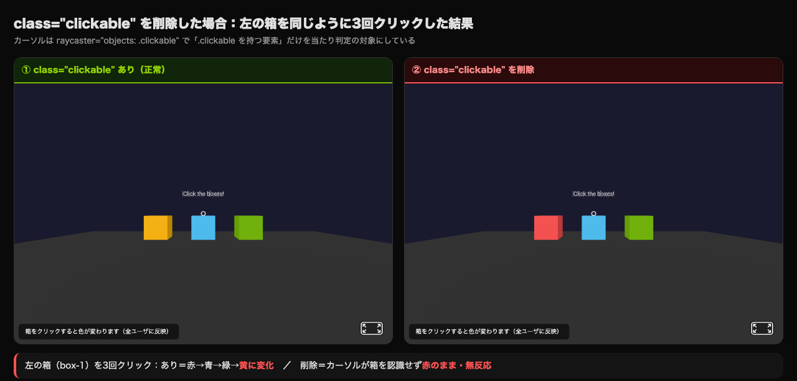
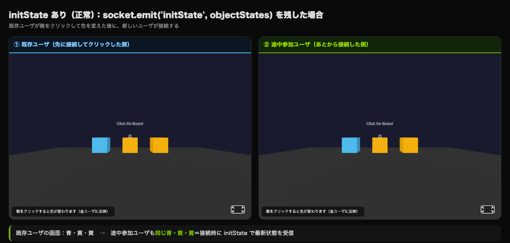
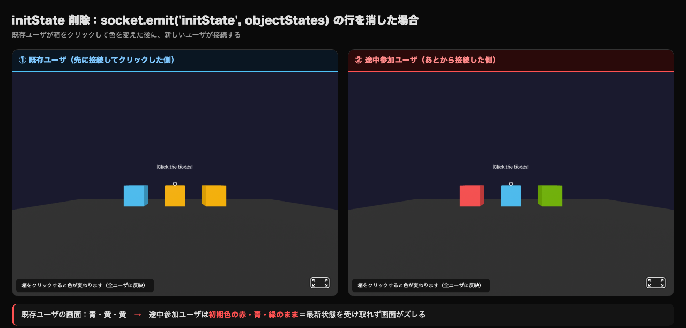

ユーザ操作・イベント・アニメーションの同期 ── クリックやインタラクションを全ユーザで共有する
第10回ではアバターの位置を同期しました。
今回はユーザの操作（クリック・インタラクション）を全ユーザ間で同期し、「誰かが箱をクリックしたら全員の画面で色が変わる」ような共有体験を実現します。
本回で出てくる英単語は、技術書・公式ドキュメントでも頻出する基本用語です。意味だけでなく読み方も覚えておくと、英語のチュートリアルや GitHub の Issue を読むときに迷いません。
| 用語 | 読み方 | 意味 |
|---|---|---|
event | イベント | 「出来事」。クリック・キー入力・受信などの発生事象。addEventListener＝アド・イベント・リスナー |
emit | エミット | 「発する／送出する」。Socket.IO でメッセージを送る動作 |
throttle | スロットル | 「絞る／制限する」。一定間隔ごとに最大1回だけ実行する仕組み（連射防止） |
debounce | デバウンス | 「跳ね返りを抑える」。短時間に連続したイベントをまとめて最後の1回だけ処理する仕組み |
authoritative | オーソリタティブ | 「権威ある／決定権を持つ」。サーバが状態の正解を決める設計を server-authoritative と呼ぶ |
lockstep | ロックステップ | 「歩調を合わせる」。全員が同じ順番でイベントを処理して状態を一致させる手法 |
broadcast | ブロードキャスト | 「放送する」。送信者以外の全員にメッセージを送る |
raycaster | レイキャスター | 「光線を投げる装置」。3D空間で視線の先にあるオブジェクトを判定する仕組み |
ユーザAがオブジェクトをクリックしたとき、以下の流れで全ユーザに反映されます。
A-Frame でクリックを検知するには、cursor コンポーネントを使います。
用語
| cursor コンポーネント | A-Frame でマウスや視線によるオブジェクト選択を実現する仕組み。<a-cursor> をカメラの子要素として配置する。 |
| raycaster | カメラ中心から仮想の光線を飛ばし、光線が当たったオブジェクトを判定する手法。objects 属性で対象を CSS セレクタで指定する。 |
| emit / broadcast | Socket.IO のメッセージ送信方法。emit は特定の相手へ、broadcast.emit は送信者以外の全員へ、io.emit は全員へ送信する。 |
HTML <!-- カーソル（視線 or マウス）を有効にする --> <a-camera> <a-cursor color="white"></a-cursor> </a-camera> <!-- クリック対象のオブジェクト --> <a-box id="target-box" class="clickable" position="0 1 -3" color="red"></a-box>
イベント送受信を関数に分けて書くと、流れがはっきりします。
JavaScript ── クライアント側を関数として整理 // (1) クリックされた時に呼ばれる関数 function handleBoxClick(element) { const clickedId = element.id; // ← 中間変数で意図を明確に const message = { id: clickedId }; socket.emit('objectClick', message); } // (2) サーバから更新通知が来た時に呼ばれる関数 function applyObjectUpdate(data) { const target = document.getElementById(data.id); if (target === null) { // ← 1行 if ではなくブロックで return; } target.setAttribute('color', data.color); } // (3) クリック対象に (1) を登録 function setupClickListeners() { const clickables = document.querySelectorAll('.clickable'); clickables.forEach((el) => { el.addEventListener('click', () => { handleBoxClick(el); }); }); } // (4) サーバからの受信を (2) にディスパッチ socket.on('objectUpdated', applyObjectUpdate); setupClickListeners();
関数ごとの役割マップ
| 関数 | 呼ばれるタイミング | 役割 |
|---|---|---|
handleBoxClick | ユーザがクリックした瞬間 | 送信: サーバに「何をクリックしたか」だけ伝える |
applyObjectUpdate | サーバから objectUpdated 受信時 | 適用: サーバが決めた色を画面に反映する |
setupClickListeners | ページ読み込み時に1回 | 初期化: 全 .clickable に (1) を結び付ける |
具体例
教室の電子黒板を想像してください。学生Aがホワイトボードの「赤」ボタンをクリックすると、その情報が先生のサーバに送られ、サーバが「次は青にしよう」と判定して全員のタブレットに配信します。学生B・Cの画面も同時に青になります。これと同じ流れを Socket.IO で実装しているだけです。
Q&A よくある疑問
Q: クライアント側で色を直接変えてはダメなの？
A: ダメではないが、状態の食い違いが起きやすくなります。例えば、ユーザAが「赤→青」、ユーザBが同じ瞬間に「赤→緑」とクリックしたとき、各クライアントが勝手に色を計算するとAとBで見える色が違う状況になります。サーバを唯一の判定者にすれば、全員が「赤→青→緑」のように同じ順で同じ色を見ます。
やってみよう（1分）
上のコードで class="clickable" を削除した場合、カーソルを合わせたときの挙動はどう変わるか予測してみよう。
実験のしかた（コード体験1のファイルで試す）
public/index.html の3つの <a-box> から class="clickable" を消して保存し、ブラウザを再読み込みして箱をクリックしてみる。
変更箇所 ── public/index.html // 変更前（クリックできる） <a-box id="box-1" class="clickable" position="-2 1 -3" color="#FF5252"></a-box> // 変更後（class を削除 → raycaster="objects: .clickable" の対象から外れる） <a-box id="box-1" position="-2 1 -3" color="#FF5252"></a-box>
実機での実行結果

class="clickable" を消すとカーソルの raycaster="objects: .clickable" が箱を当たり判定の対象にできず、クリック自体が成立しない（色が変わらない）。objects 属性との関係）を書いてください。3D空間のオブジェクトの状態（色、位置、回転など）をサーバ側で管理することで、以下の2つを実現します。
| 課題 | 解決方法 |
|---|---|
| リアルタイム反映 | クリック時にサーバで状態を更新し、全クライアントに配信する |
| 途中参加 | 新しいユーザが接続したとき、サーバが現在のオブジェクト状態を送信する |
JavaScript（サーバ側の概念コード）── 関数として整理 // サーバでオブジェクトの状態を管理（唯一の正解） const objectStates = { 'box-1': { color: 'red' }, 'box-2': { color: 'blue' }, 'box-3': { color: 'green' } }; // (1) 状態更新ロジックを関数として切り出す function updateObjectColor(id, newColor) { if (objectStates[id] === undefined) { // ← 1行 if ではなくブロックで return null; } objectStates[id].color = newColor; return objectStates[id]; } // (2) 新規接続時: 現在の全状態を送信 function sendInitialState(socket) { socket.emit('initState', objectStates); } // (3) クリック受信: 状態を更新して全員に配信 function handleObjectClick(data) { const updated = updateObjectColor(data.id, data.newColor); if (updated === null) { return; } const payload = { id: data.id, color: updated.color }; // ← 中間変数 io.emit('objectUpdated', payload); } io.on('connection', (socket) => { sendInitialState(socket); socket.on('objectClick', handleObjectClick); });
具体例
Google ドキュメントの裏側では、文書本体（文字列、書式、コメント）が Google サーバ上の1つのデータとして保管されています。あなたが文字を打つと、その差分がサーバに送られ、サーバが本体を更新して、開いている全員に新しい状態を配信します。後から開いた人も、サーバから「現在のドキュメント全文」をもらって即座に最新版を見られます。objectStates と initState はまさにこの役割です。
Q&A よくある疑問
Q: サーバが再起動したら状態は消えるの？
A: はい、メモリ上の変数なので消えます。本番では Redis やデータベース（PostgreSQL など）に objectStates を保存して、再起動後も復元します。授業中はメモリで十分ですが、「永続化」という発想は覚えておきましょう。
やってみよう（1分）
上のコードで socket.emit('initState', objectStates) の行を削除した場合、途中から接続したユーザの画面はどうなるか考えてみよう。
実験のしかた（コード体験1のファイルで試す）
server.js の新規接続時に状態を送る1行をコメントアウト（または削除）して node server.js を再起動する。
① 1つ目のタブで箱を何回かクリックして色を変える → ② そのあと2つ目のタブを開く（＝途中参加）。
変更箇所 ── server.js（io.on('connection') の中） io.on('connection', (socket) => { // この1行を削除すると、途中参加ユーザに現在の状態が届かなくなる // socket.emit('initState', objectStates); ← 削除（コメントアウト） socket.on('objectClick', (data) => { /* ...（変更なし）... */ }); });
実機での実行結果 ①：行を残した場合（正常）

initState で最新状態を受信するため、途中参加でも全員の色が一致する。実機での実行結果 ②：行を削除した場合（バグ）

objectUpdated しか受け取れず、接続前に起きた変更を知らないため既存ユーザと画面がズレる。initState で送る役割を書いてください。A-Frame の animation コンポーネントを使い、全クライアントで同時にアニメーションを再生します。「いつ再生するか」「結果が当たったか」はサーバが判定し、クライアントは描画だけを担当します。
Client-authoritative vs Server-authoritative
| Client-authoritative（クライアント権威） | Server-authoritative（サーバ権威） | |
|---|---|---|
| 判定する場所 | 各クライアント | サーバ |
| 長所 | 応答が速い（ローカルで即決定） | 全員の状態が一致する／チート困難 |
| 短所 | 食い違いが起きる／チート可能 | 判定が往復ぶんだけ遅れる |
| 用途 | カーソル位置・UI（自分にしか影響しない） | 共有オブジェクト・スコア・当たり判定 |
JavaScript ── アニメーションも関数として整理 // (1) アニメーション再生関数（クライアント側） function playRotateAnimation(elementId) { const box = document.getElementById(elementId); if (box === null) { return; } const animationConfig = { // ← 中間変数で意図を明確に property: 'rotation', to: '0 360 0', dur: 1000, easing: 'easeInOutQuad' }; box.setAttribute('animation', animationConfig); } // (2) サーバが「再生せよ」と命令してきたら (1) を呼ぶ socket.on('playAnimation', (data) => { playRotateAnimation(data.id); });
具体例
FPS（オンラインシューティング）で「ヘッドショットが入ったか」をクライアントが判定すると、改造プログラムで「絶対当たる」状態を作れてしまいます。だから Counter-Strike や VALORANT のような競技ゲームは サーバが当たり判定を行う server-authoritative 設計です。3D 空間の共有オブジェクトも、サーバが色や状態を決めることで「自分の画面だけ違う色」を防げます。
Q&A よくある疑問
Q: サーバ判定だと遅くなる気がする。応答性をよくする方法は？
A: 楽観的更新 (optimistic update) を組み合わせます。クリックした瞬間にクライアント側でも「とりあえず青に変える」演出を入れて、サーバから違う色が返ってきたら直す。これで体感速度はそのまま、最終的な状態は全員一致します。
やってみよう（1分）
dur（duration）の値を 1000 から 3000 に変えた場合、アニメーションの見え方はどう変わるか予測してみよう。
実験のしかた（animationConfig の dur を変える）
変更箇所 ── playRotateAnimation() の中 const animationConfig = { property: 'rotation', to: '0 0 360', dur: 1000, // ← これを 3000 にすると1回転に3秒かかる（＝ゆっくり） easing: 'linear', loop: true }; box.setAttribute('animation', animationConfig);
実機での実行結果（左右を同時に再生して比較）
dur は1回のアニメーションにかかる時間（ミリ秒）。3000 にすると同じ1回転に3倍の時間がかかりゆっくり動く（左が3回転する間に右は1回転）。動き自体や最終的な角度は同じ。マルチユーザ3D空間では、オブジェクトを2種類に分けて考えます。さらに、共有オブジェクトを操作するときは送信頻度の制御（throttle / debounce）が必要です。
| 共有オブジェクト | 個人オブジェクト | |
|---|---|---|
| 定義 | 全ユーザが同じ状態を見るオブジェクト | 各ユーザだけが見る・操作するオブジェクト |
| 例 | 部屋の家具、共有の掲示板、展示物 | 自分のアバター、UIメニュー、カーソル |
| 状態管理 | サーバで管理し、全員に同期する | 各クライアントのローカルで管理する |
| クリック | クリックすると全員の画面で変化する | クリックしても自分の画面だけ変わる |
送信頻度の制御: throttle と debounce
共有オブジェクトをドラッグやキー連打で動かすと、何百回も emit が発火してネットワークが詰まります。これを抑えるのが throttle（スロットル） と debounce（デバウンス） です。
| throttle（スロットル） | debounce（デバウンス） | |
|---|---|---|
| 動作 | 一定間隔ごとに 最大1回だけ実行 | 連続イベントが止まってから一定時間後に 最後の1回だけ実行 |
| イメージ | 蛇口を絞って一定量だけ流す | 静かになるまで待ってから処理 |
| 用途 | マウスドラッグ・スクロール位置の送信 | 検索フォームの入力確定・リサイズ完了の検知 |
| 間隔の目安 | 16〜100ms（滑らかさ重視） | 200〜500ms（確定タイミング重視） |
JavaScript ── throttle と debounce の最小実装 // (1) throttle: 100msに1回しか実行しない function createThrottle(fn, intervalMs) { let lastTime = 0; // ← 中間変数 return (data) => { const now = Date.now(); const elapsed = now - lastTime; if (elapsed < intervalMs) { return; // ← 早期return、1行 if は避ける } lastTime = now; fn(data); }; } // (2) debounce: 連続イベントの最後の1回だけ実行 function createDebounce(fn, waitMs) { let timerId = null; return (data) => { if (timerId !== null) { clearTimeout(timerId); } timerId = setTimeout(() => { fn(data); timerId = null; }, waitMs); }; } // (3) 使用例: ドラッグ位置は throttle、入力確定は debounce const sendPosition = createThrottle((pos) => { socket.emit('movePosition', pos); }, 50); const sendQuery = createDebounce((text) => { socket.emit('search', text); }, 300);
具体例
Google マップで地図をドラッグしているとき、移動の途中ピクセルを1秒間に60回サーバに送ったら回線が崩壊します。実際はthrottleでだいたい100msに1回だけ送り、最後に手を離した瞬間に debounceで確定座標を送る、という組み合わせを使っています。Slack の「入力中…」表示も同じ。タイプするたびに送らず、debounce で 1秒間タイプが止まったら一度だけ「入力中」を消すフラグを送ります。
Q&A よくある疑問
Q: throttle と debounce どちらを選べばよい？
A: 「途中経過も見せたい → throttle」「最終結果だけでよい → debounce」と覚えます。マウス位置の同期は throttle（動きが見えないと不自然）、フォームの自動保存は debounce（タイプ中に毎回保存すると重い）。
| 対策 | 説明 | 例 |
|---|---|---|
| 楽観的更新 | サーバ応答を待たずに、本人画面で即座に変化を反映。サーバから違う結果が返れば直す。 | クリックした瞬間に色変更を表示 |
| throttle / debounce | 送信頻度を絞る。1.4 参照 | ドラッグ・入力フォーム |
| 補間 (interpolation) | 受信した位置データ間を滑らかに繋ぐ。 | アバターの移動を滑らかに見せる |
| ロック (lock) | 1人が編集中は他のユーザの操作を拒否する。 | 家具を移動中は他人が動かせない |
| lockstep (ロックステップ) | 全員が同じ順番でイベントを処理して状態を一致させる手法 | RTS（リアルタイム戦略ゲーム） |
JavaScript ── 共有オブジェクトのロック（サーバ側） // ロック状態を管理 const locks = {}; // { 'box-1': 'socket-id-of-locker', ... } // (1) ロック取得を試みる function tryAcquireLock(objectId, socketId) { const currentLocker = locks[objectId]; if (currentLocker !== undefined && currentLocker !== socketId) { return false; // ← 既に他人が握っている } locks[objectId] = socketId; return true; } // (2) ロック解放 function releaseLock(objectId, socketId) { if (locks[objectId] === socketId) { delete locks[objectId]; } } // (3) クリック処理にロック判定を追加 socket.on('objectClick', (data) => { const acquired = tryAcquireLock(data.id, socket.id); if (acquired === false) { socket.emit('lockDenied', { id: data.id }); return; } // ... 通常の状態更新処理 ... releaseLock(data.id, socket.id); });
具体例
航空券予約サイトで「残り1席」の便を2人が同時に予約しようとしたとき、サーバは先に決済まで進んだ方だけに座席を確保し、もう一方には「申し訳ありません、既に売り切れました」と返します。これがロック設計です。3D 空間で2人が同時に同じ家具をドラッグしたら、先にロックを取った方だけが動かせて、もう一方は「他のユーザが操作中です」と表示する、というのが基本パターンです。
Q&A よくある疑問
Q: ユーザがロックを取ったまま切断したら、永遠にロックされる？
A: なるので必ず解放処理が必要です。Socket.IO なら socket.on('disconnect', ...) でそのソケットが保持していたロックをすべて解放するか、タイムアウト（例: 30秒）で自動解放します。これを「リース型ロック」と呼びます。
この回で作るインタラクティブ共有3D空間（標準課題の解答例）の実行動画です。左のユーザーがオブジェクトをクリックすると、色がランダムに変わり・跳ねるアニメーションが起き、その結果が右のユーザーの画面にも即同期されます。
socket.emit('object-click', ...) で送り、サーバが io.emit('object-update', ...) で全員に配信。全クライアントのオブジェクト色が一致する。ユーザAが箱をクリックして色が変わるまでの流れを追います。
| 手順 | 場所 | 処理内容 |
|---|---|---|
| 1 | ユーザA（A-Frame） | カーソルで箱をクリック → click イベントが発生 |
| 2 | ユーザA（JavaScript） | クリックされた箱のIDと新しい色を socket.emit('objectClick', data) で送信 |
| 3 | サーバ | objectStates の該当エントリを更新 → io.emit('objectUpdated', data) で全員に配信 |
| 4 | 全クライアント | 受信したデータで該当オブジェクトの色を setAttribute('color', newColor) で変更 |
ポイント: 手順3でサーバが io.emit（全員）を使っています。クリックイベントではクリックした本人を含む全員に結果を送るため、broadcast.emit ではなく io.emit を使います。
以下のコードをコピーしてファイルを作成し、Node.js で実行します。
S:\Web_Prog の中に Web11 フォルダを作成するS:\Web_Prog\Web11 を開くTerminal
npm init -y
npm install express@4 socket.io@1.7.4
⚠ 注意: Express は最新の v5 系ではなく、古い Node.js でも動く v4 系を使うため、必ず express@4 と @4 を付けてインストールしてください。
箱をクリックすると色が変わり、その変化が全ユーザの画面に反映される仕組みを作ります。
ファイル1: server.js
JavaScript ── server.js const express = require('express'); const socketIo = require('socket.io'); const app = express(); app.use(express.static('public')); // オブジェクトの状態を管理 const objectStates = { 'box-1': { color: '#FF5252' }, 'box-2': { color: '#4FC3F7' }, 'box-3': { color: '#76B900' } }; // クリック時に巡回する色リスト const colorCycle = ['#FF5252', '#4FC3F7', '#76B900', '#FFB800', '#E040FB', '#FF6E40']; // サーバを起動し、その上に Socket.IO を載せる const server = app.listen(3000, () => { console.log('http://localhost:3000 でサーバ起動'); }); const io = socketIo(server); io.on('connection', (socket) => { console.log('接続:', socket.id); // 新規接続時: 現在のオブジェクト状態を送信 socket.emit('initState', objectStates); // オブジェクトクリック: 状態を更新して全員に配信 socket.on('objectClick', (data) => { if (objectStates[data.id]) { // 次の色に巡回 const currentIndex = colorCycle.indexOf(objectStates[data.id].color); const nextColor = colorCycle[(currentIndex + 1) % colorCycle.length]; objectStates[data.id].color = nextColor; console.log('色変更:', data.id, '->', nextColor); io.emit('objectUpdated', { id: data.id, color: nextColor }); } }); socket.on('disconnect', () => { console.log('切断:', socket.id); }); });
💡 なぜ const server = app.listen(...) と書くの？ 第10回と同じく、Socket.IO を起動したサーバの上に載せるため、app.listen() が返すサーバ本体を server で受け取り、それを socketIo(server) に渡しています。
ファイル2: public フォルダを作成し、その中に index.html を作成
HTML ── public/index.html <!DOCTYPE html> <html lang="ja"> <head> <meta charset="UTF-8"> <title>Shared Click</title> <script src="https://aframe.io/releases/1.7.1/aframe.min.js"></script> <script src="/socket.io/socket.io.js"></script> </head> <body> <a-scene> <!-- カーソル（クリック検知用） --> <a-camera position="0 1.6 4"> <a-cursor color="white" fuse="false" raycaster="objects: .clickable"></a-cursor> </a-camera> <!-- クリック対象の箱3つ --> <a-box id="box-1" class="clickable" position="-2 1 -3" color="#FF5252"></a-box> <a-box id="box-2" class="clickable" position="0 1 -3" color="#4FC3F7"></a-box> <a-box id="box-3" class="clickable" position="2 1 -3" color="#76B900"></a-box> <!-- ラベル --> <a-text value="Click the boxes!" position="0 2.5 -3" align="center" color="white" width="6"></a-text> <!-- 床と空 --> <a-plane position="0 0 0" rotation="-90 0 0" width="20" height="20" color="#333"></a-plane> <a-sky color="#1a1a2e"></a-sky> </a-scene> <div style="position:fixed;bottom:10px;left:10px;color:white;background:rgba(0,0,0,0.6);padding:8px 16px;border-radius:8px;font-family:sans-serif;font-size:14px;z-index:999"> 箱をクリックすると色が変わります（全ユーザに反映） </div> <script> const socket = io(); // 初期状態の受信 socket.on('initState', (states) => { for (const id in states) { const el = document.getElementById(id); if (el) { el.setAttribute('color', states[id].color); } } }); // クリック対象にイベントリスナを設定 document.querySelectorAll('.clickable').forEach((el) => { el.addEventListener('click', () => { socket.emit('objectClick', { id: el.id }); }); }); // オブジェクト更新の受信 socket.on('objectUpdated', (data) => { const el = document.getElementById(data.id); if (el) { el.setAttribute('color', data.color); } }); </script> </body> </html>
実行手順:
node server.js を実行http://localhost:3000 を開く（タブ1）http://localhost:3000 を開く（タブ2）コード体験1を発展させ、オブジェクトをクリックすると色が変わる＋回転アニメーションが再生される＋大きさが切り替わる仕組みを作ります。「いつ回転するか」「次の大きさは何倍か」はサーバが決定し（server-authoritative）、全ユーザの画面で同期されます。
ファイル1: server.js
JavaScript ── server.js const express = require('express'); const socketIo = require('socket.io'); const app = express(); app.use(express.static('public')); // オブジェクトの状態を管理（色 + 拡大しているか） const objectStates = { 'obj-1': { color: '#FF5252', big: false }, 'obj-2': { color: '#4FC3F7', big: false }, 'obj-3': { color: '#76B900', big: false } }; // クリック時に巡回する色リスト const colorCycle = ['#FF5252', '#4FC3F7', '#76B900', '#FFB800', '#E040FB', '#FF6E40']; // サーバを起動し、その上に Socket.IO を載せる const server = app.listen(3000, () => { console.log('http://localhost:3000 でサーバ起動'); }); const io = socketIo(server); io.on('connection', (socket) => { console.log('接続:', socket.id); // 新規接続時: 現在のオブジェクト状態を送信 socket.emit('initState', objectStates); // オブジェクトクリック: 状態を更新して全員に配信 socket.on('objectClick', (data) => { if (objectStates[data.id]) { // (1) 色を次の色に巡回 const currentIndex = colorCycle.indexOf(objectStates[data.id].color); const nextColor = colorCycle[(currentIndex + 1) % colorCycle.length]; objectStates[data.id].color = nextColor; // (2) 拡大状態を反転し、三項演算子で次の大きさを決める objectStates[data.id].big = !objectStates[data.id].big; const nextScale = objectStates[data.id].big ? '1.5 1.5 1.5' : '1 1 1'; console.log('更新:', data.id, '->', nextColor, nextScale); // (3) 色と大きさを全員に配信 io.emit('objectUpdated', { id: data.id, color: nextColor, scale: nextScale }); // (4) 「回転アニメーションを再生せよ」と全員に命令 io.emit('playAnimation', { id: data.id }); } }); socket.on('disconnect', () => { console.log('切断:', socket.id); }); });
💡 ポイント: クライアントは「クリックした」ことだけを伝え、次の色・次の大きさ・回転の合図はすべてサーバが決定します。これにより全員の画面が必ず一致します（server-authoritative）。
ファイル2: public フォルダの中の index.html
HTML ── public/index.html <!DOCTYPE html> <html lang="ja"> <head> <meta charset="UTF-8"> <title>Shared Animation</title> <script src="https://aframe.io/releases/1.7.1/aframe.min.js"></script> <script src="/socket.io/socket.io.js"></script> </head> <body> <a-scene> <!-- カーソル（クリック検知用） --> <a-camera position="0 1.6 4"> <a-cursor color="white" fuse="false" raycaster="objects: .clickable"></a-cursor> </a-camera> <!-- クリック対象の箱3つ（animation__rot で回転アニメを定義） --> <!-- startEvents: rotate → 'rotate' イベントが来たときだけ回転する --> <a-box id="obj-1" class="clickable" position="-2 1 -3" color="#FF5252" animation__rot="property: rotation; to: 0 360 0; dur: 2000; startEvents: rotate; easing: easeInOutQuad"></a-box> <a-box id="obj-2" class="clickable" position="0 1 -3" color="#4FC3F7" animation__rot="property: rotation; to: 0 360 0; dur: 2000; startEvents: rotate; easing: easeInOutQuad"></a-box> <a-box id="obj-3" class="clickable" position="2 1 -3" color="#76B900" animation__rot="property: rotation; to: 0 360 0; dur: 2000; startEvents: rotate; easing: easeInOutQuad"></a-box> <!-- ラベル --> <a-text value="Click to rotate & resize!" position="0 2.5 -3" align="center" color="white" width="6"></a-text> <!-- 床と空 --> <a-plane position="0 0 0" rotation="-90 0 0" width="20" height="20" color="#333"></a-plane> <a-sky color="#1a1a2e"></a-sky> </a-scene> <div style="position:fixed;bottom:10px;left:10px;color:white;background:rgba(0,0,0,0.6);padding:8px 16px;border-radius:8px;font-family:sans-serif;font-size:14px;z-index:999"> 箱をクリックすると回転して大きさが変わります（全ユーザに反映） </div> <script> const socket = io(); // 状態を画面に反映する共通関数（色と大きさ） function applyState(id, color, scale) { const el = document.getElementById(id); if (el === null) { return; } el.setAttribute('color', color); el.setAttribute('scale', scale); } // 初期状態の受信（途中参加でも最新の色・大きさを復元） socket.on('initState', (states) => { for (const id in states) { const scale = states[id].big ? '1.5 1.5 1.5' : '1 1 1'; applyState(id, states[id].color, scale); } }); // クリック対象にイベントリスナを設定 document.querySelectorAll('.clickable').forEach((el) => { el.addEventListener('click', () => { socket.emit('objectClick', { id: el.id }); }); }); // オブジェクト更新の受信（色と大きさ） socket.on('objectUpdated', (data) => { applyState(data.id, data.color, data.scale); }); // アニメーション再生命令の受信 → 'rotate' イベントを発火させて回転させる socket.on('playAnimation', (data) => { const el = document.getElementById(data.id); if (el) { el.emit('rotate'); } }); </script> </body> </html>
実行手順:
node server.js を実行http://localhost:3000 を開く（タブ1）http://localhost:3000 を開く（タブ2）3〜4人のグループを組んで、以下の2フェーズで進めてください。
今回のコード体験で動かしたイベント同期のコードを元に、質問を1つ考えてください。
以下の質問例を参考に、自分なりの質問を考えましょう。そのまま使ってもOKです。
質問の切り口（参考）
| 変更・質問内容 | 質問例 |
|---|---|
サーバの objectStates を削除する | 「途中参加のユーザはどうなる？」 |
io.emit を broadcast.emit に変える | 「クリックした本人の画面では何が起こる？」 |
アニメーションの dur を 5000 にする | 「見え方はどう変わる？」 |
| 共有オブジェクトと個人オブジェクトの違い | 「カーソルは他のユーザに見えるべき？」 |
initState のイベントを削除する | 「途中参加と最初からいる人で何が違う？」 |
| オブジェクトを10個に増やす | 「サーバの処理はどう変わる？」 |
1人ずつ順番に自分の質問をメンバーに出し、回答を聞いて記録してください。
| 役割 | やること |
|---|---|
| 出題者 | 自分で考えた質問を口頭で出す |
| 回答者 | コードやノートを見ずに口頭で回答する |
| 記録者 | 回答の要点と評価を記録する |
セクション1の内容とコード体験の経験をもとに、以下の問いに答えなさい。
問1. ユーザAが箱をクリックしてから、ユーザBの画面で色が変わるまでのデータフローを、以下の語句をすべて使って3〜5文で説明しなさい。
問2. 以下の表の空欄を埋めて、共有オブジェクトと個人オブジェクトの違いを整理しなさい。
| 共有オブジェクト | 個人オブジェクト | |
|---|---|---|
| 定義 | ||
| 具体例 | ||
| 状態管理の場所 |
問3. コード体験1で、サーバが objectStates でオブジェクトの状態を管理する理由を説明しなさい。もし管理しなかった場合、どのような問題が起きるか具体的に書きなさい。
コード体験2のプログラムを以下の指示どおりに改造しなさい。
改造指示（すべて実行すること）
| # | 指示 | ヒント |
|---|---|---|
| 1 | 4つ目のクリック対象オブジェクトを追加する（形状は自由） | HTMLに要素を追加し、サーバの objectStates にも初期値を追加する |
| 2 | クリック時のアニメーションの動き（duration）を 1000 ms に変更する | animation__rot の dur を変える |
| 3 | スケール変更のパターンを 1 → 2 → 1 に変更する | サーバ側の三項演算子の値を変える |
server.js と public/index.html のコード全体を貼り付けるdur を変えたことで見え方がどう変わったかを記録する複数のユーザが同時にアクセスして、展示物をクリックすると全員の画面で回転・色変化する「3Dギャラリー」を作ってください。
必須要件
提出要件（2点セット）
| 提出物 | 内容 |
|---|---|
| 1. コード | server.js と public/index.html のコード全体をNotionノートに貼り付ける |
| 2. 音声説明 | 以下の内容を1〜2分の音声で録音し、Notionノートに添付する スマホの録音アプリやPCの機能で録音 → Notionに /audio で添付 |
音声で説明すること:
各セクションを埋めていってください。これが提出するPDFの元になります。
Notion テンプレート
# Webプログラミング演習 第11回
名前:
学籍番号:
---
## 1.1 クリックイベントの同期: やってみよう
### class="clickable" を削除した場合の予測
（予測した挙動と、raycaster の objects 属性との関係を書く）
---
## 1.2 オブジェクトの状態管理: やってみよう
### socket.emit('initState', objectStates) を削除した場合の予測
（途中参加のユーザの画面がどうなるか / サーバ側での状態保持の役割）
---
## 1.3 アニメーションの同期: やってみよう
### dur を 1000 → 3000 に変えた場合の予測
（アニメーションの見え方の変化）
---
## コード体験 1: クリックで色が変わる共有オブジェクト
### Q1. 箱をクリックしたとき、色はどのように変化したか？（何色 → 何色）
### Q2. もう一方のタブでも同時に色が変わったか？
### Q3. 3つ目のタブを開いたとき、箱の色はどうなっていたか？（初期色？ 最新の色？）
---
## コード体験 2: クリックで回転＋拡大する共有オブジェクト
### Q1. 箱をクリックしたとき、回転・色・大きさはどう変化したか？
### Q2. もう一方のタブでも同時に回転・色・大きさが変わったか？
### Q3. 大きさを切り替えている「三項演算子」はサーバ側とクライアント側のどこにあるか？
---
## グループ口頭試問
### Phase 1: あなたが考えた質問
### Phase 2: グループメンバー（氏名）:
### 口頭試問の記録
| ラウンド | 出題者 | 回答者 | 質問（概要） | 回答の要点 | 評価 |
|---------|--------|--------|-------------|-----------|------|
| 1 | | | | | A/B/C |
| 2 | | | | | A/B/C |
| 3 | | | | | A/B/C |
---
## 標準課題 1: イベント同期の仕組みを説明する
### 問1. ユーザAが箱をクリックしてから、ユーザBの画面で色が変わるまでのデータフロー
（click イベント / socket.emit / サーバ / objectStates / io.emit / setAttribute をすべて使って3〜5文で）
### 問2. 共有オブジェクトと個人オブジェクトの違い
| | 共有オブジェクト | 個人オブジェクト |
|-----------------|----------------|----------------|
| 定義 | | |
| 具体例 | | |
| 状態管理の場所 | | |
### 問3. サーバが objectStates で状態を管理する理由と、管理しなかった場合の問題
---
## 標準課題 2: インタラクションを追加する（コード改造）
### ① 改造後のコード全体
```javascript
（ここに改造後の server.js を貼り付け）
```
```html
（ここに改造後の public/index.html を貼り付け）
```
### ② 各改造について「どの行を変えたか」と「なぜその値にしたか」
1. 4つ目のクリック対象オブジェクトの追加:
2. アニメーションの duration を 1000 ms に変更:
3. スケール変更のパターンを 1 → 2 → 1 に変更:
### ③ アニメーションの dur を変えたことで見え方がどう変わったか
---
## 発展課題: マルチユーザ・インタラクティブ・ギャラリー
### 1. コード（server.js と public/index.html 全体）
```javascript
（ここに server.js を貼り付け）
```
```html
（ここに public/index.html を貼り付け）
```
### 2. 音声説明（1〜2分の音声ファイルを添付）
- ギャラリーのテーマと空間デザインの工夫
- イベント同期の仕組み（どのイベントがどう流れるか）
- 途中参加時の状態復元がどう動作するか
objectStates で現在の状態を保持しており、新規接続時に initState イベントで最新の状態を送信するため。playAnimation と objectUpdated を io.emit で全員に配信しているため。server.js の objectStates[data.id].big ? '1.5 1.5 1.5' : '1 1 1'）にある。クライアント側の initState 内の三項演算子は、途中参加時に「保存された状態を復元して表示する」ためのもので、大きさ自体を決めているのはサーバ。これが server-authoritative（サーバ権威）の考え方。手順1〜4の主役と動作を整理すると、以下のようになる。
| 手順 | 主役 | 役割 |
|---|---|---|
| 1 | ユーザA（A-Frame） | イベント発生源: カーソルが箱に当たり click イベントが raycaster 経由で発火する |
| 2 | クライアントA（JS） | 送信側: socket.emit('objectClick', {id}) でサーバに「何をクリックしたか」だけ伝える（色は計算しない） |
| 3 | サーバ | 権威 (authoritative) サーバ: 次の色を決定し objectStates を更新 → io.emit('objectUpdated', ...) で全員に同じ結果を配信 |
| 4 | 全クライアント（A含む） | 受信側: setAttribute('color', newColor) で表示を更新 |
ポイント: 手順3が broadcast.emit（送信者以外）ではなく io.emit（全員）になっている理由は、クリックした本人もサーバが決めた色を反映する必要があるから。クライアントが勝手に色を変えると、サーバの状態と食い違って「自分だけ違う色が見える」バグの原因になる。
// クライアント側ではローカルで色を計算しない！
socket.emit('objectClick', { id: el.id }); // ← サーバに任せる
// サーバから来た色を待って描画する
socket.on('objectUpdated', function(data) {
document.getElementById(data.id).setAttribute('color', data.color);
});
これが「サーバが権威を持つ (server-authoritative)」設計の基本パターン。アバター位置（前回）は逆に「送信者本人は自分の位置を知っているので broadcast」だが、共有オブジェクトの色は「全員が同じ計算結果を見る」必要があるため io.emit を使う。